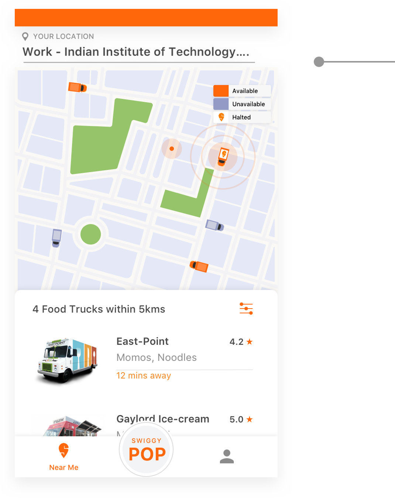

Onboarding Screen
User will select the food preference for which he want to be notified.
Also he can add the extra food preference
Also he can add the extra food preference
If he wants to change the food preference he can go to Change Preference Section in profile menu.
By default, notification will be sent everytime the truck with your food preference passes within 2 km of your location. You can change this to twice a day or one tme a day.
Also, if the person misses the default notification a message will pop up whether he wishes to have notification again or not. If yes notification will be turned on if no it will be off. In case of any mistakes he can always come and turn on/off the notification from the preference menu.
Also, if the person misses the default notification a message will pop up whether he wishes to have notification again or not. If yes notification will be turned on if no it will be off. In case of any mistakes he can always come and turn on/off the notification from the preference menu.
Location

Location is detected in the beginning only which would later be used for ordering the food.
Also we haven’t included change location option in the payment procedure as the process is fast and truck will only be available within 5 km range and food can’t be ordered for other place.
Also we haven’t included change location option in the payment procedure as the process is fast and truck will only be available within 5 km range and food can’t be ordered for other place.
Map
Map shows
1. The truck coming to your location as Active “Available” which are shown in orange.
2. The trucks going away are in disabled state “Unavailable”
3. The trucks on Halt are shown with swiggy logo on them and covers 600m radius Customers. The halt time is shown as the count down above the truck.
1. The truck coming to your location as Active “Available” which are shown in orange.
2. The trucks going away are in disabled state “Unavailable”
3. The trucks on Halt are shown with swiggy logo on them and covers 600m radius Customers. The halt time is shown as the count down above the truck.
Truck will Halt at the place where maximum people have given their food preferences and also there is no orders for the truck.
The truck is available if a person is lying in 150 deg angle, radius upto 5km in the direction of the truck. Other cases are consider as unavailable.
Main Screen
1. Instead of search option I prefered filter as here food options are limited and among them many are those which are edible at certain period of time of the day.
2. Food trucks are listed according to the distance they are away from the user.
3. If no trucks are available there will be disabled cards according to your food preferences giving the information of its availability.
2. Food trucks are listed according to the distance they are away from the user.
3. If no trucks are available there will be disabled cards according to your food preferences giving the information of its availability.
Track Menu
1. Menu shows food items, its availability and Price.
2. Only 2 modes are available for payment. Paytm and cash, which are both one step and fast process.
2. Only 2 modes are available for payment. Paytm and cash, which are both one step and fast process.
Track Order
Map shows
1. The truck coming to your location with your order and its Estimated Time of Arrival(ETA).
2. It is also showing the people nearby who ordered from the same truck before you.
3. You can tap on the icon which will show a pop-up which gives an option to eat together with them. In this your order will be delivered at their place where you both can eat together.
1. The truck coming to your location with your order and its Estimated Time of Arrival(ETA).
2. It is also showing the people nearby who ordered from the same truck before you.
3. You can tap on the icon which will show a pop-up which gives an option to eat together with them. In this your order will be delivered at their place where you both can eat together.
Swiggy POP
1. This feature helps you find food in 5 mins by showing the food from trucks that are only 2km away.
2. You can order only from a single truck and in later screen the quantity can be added.
2. You can order only from a single truck and in later screen the quantity can be added.
Summary
- Considering the Ola Analogy I decided to mark my location and accordingly the available trucks are shown in the map and in the list to me.
- The preparation time of each snack is taken to be 5-10 mins or less. ETA will be shown according to prep time and Travel time (route defined according to the orders).
- The location of truck is tracked in the map and in case of any discrepency they can communicate through Phone Call. (Ola’s Analogy)
- T mimic real experiences we introduced
- Speciality - One Special food in most of the truck.
- Halting of Trucks - For the customers who have given their food preferences. This will again notify the user which can crave them to eat, which generally happens in real life.
- Friends- You are told about nearby friends who are ordering from the same truck this would promote the real experience people feel going with their buddies.
- Fast- In real life when we see a hawker we instantly order what we need so to replicate the same we try to speed up the process in the app. The order screen has direct pop-up of bill and payment. Also Swiggy-POP feature for fast delivery.